A
★★★★★
These guys fixed my gate perfectly. Professional and fast.
Our deck and fence repair services help restore safety, appearance, and structural stability to outdoor spaces. We repair damaged boards, loose railings, fence posts, stairs, gates, and weathered surfaces.
Seasonal maintenance and staining can help extend the lifespan of wood decks and fences. We also provide power washing to remove dirt, mildew, and old finish before applying fresh stain or sealant.
We frequently repair fences and decks in suburban neighbourhoods across Oakville and Burlington. Homeowners near Lake Ontario often request weather-related deck maintenance.
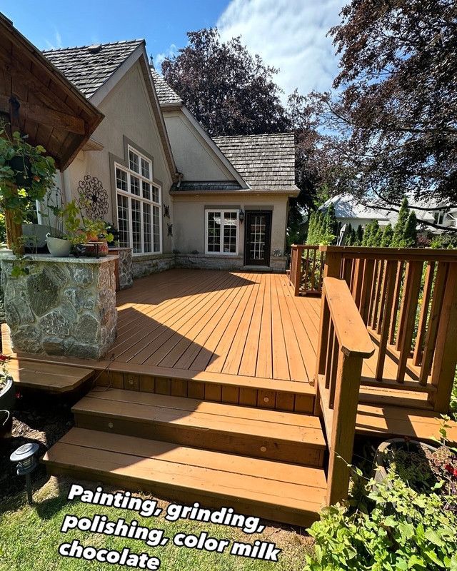


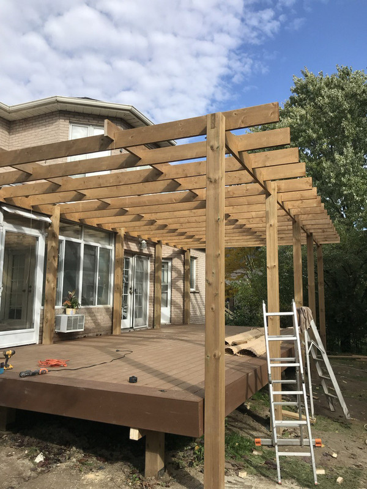
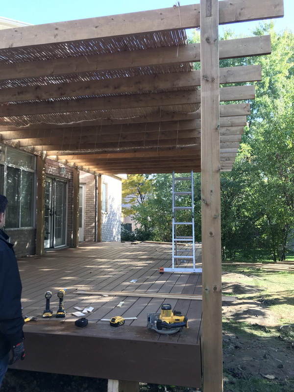
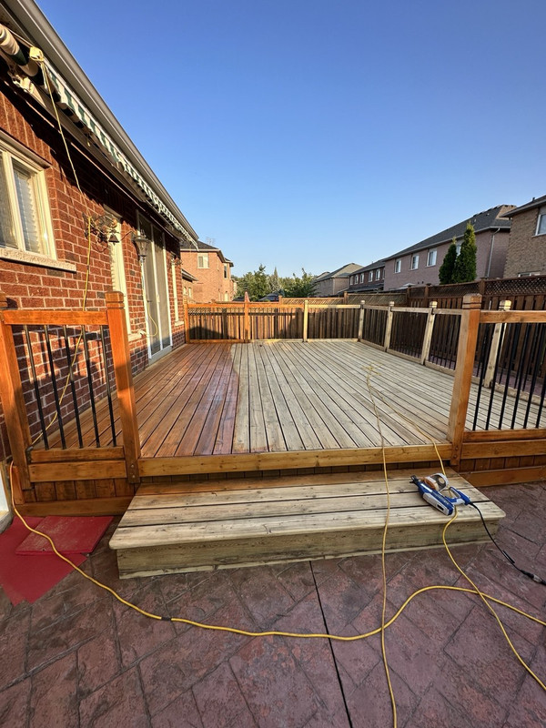
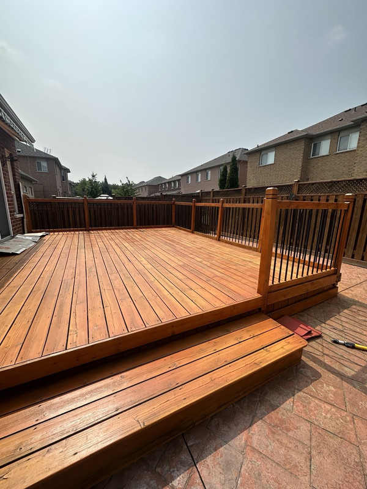
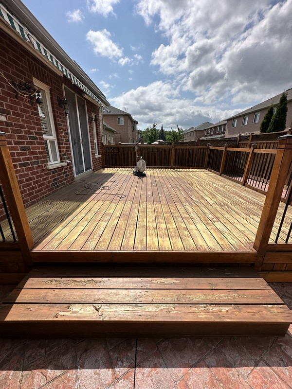
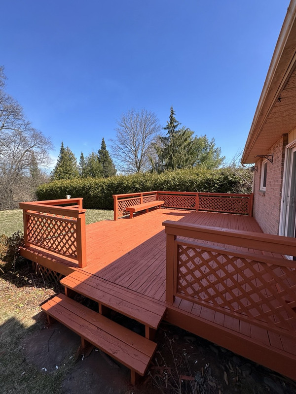
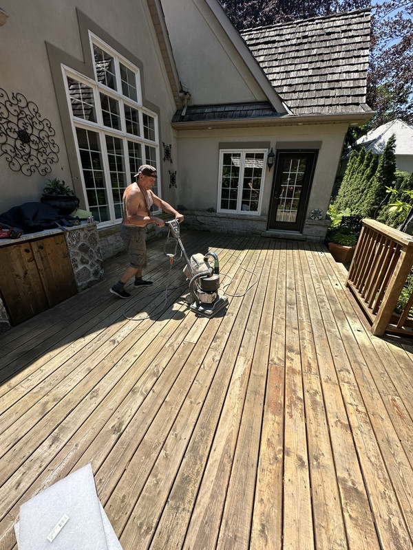
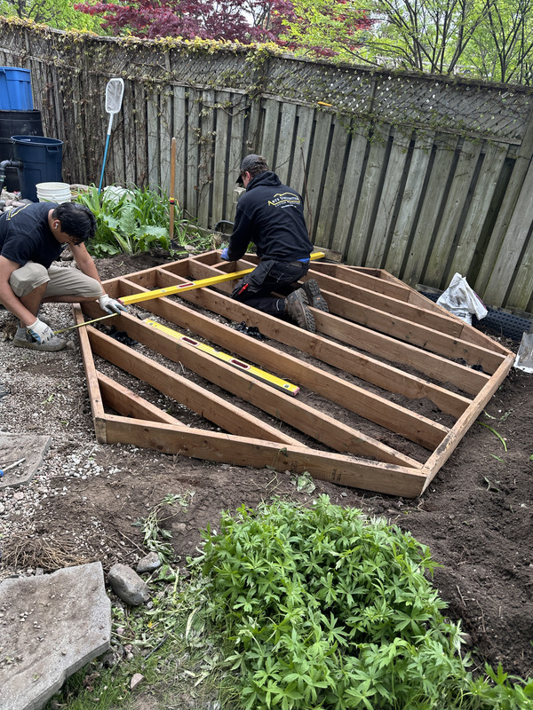
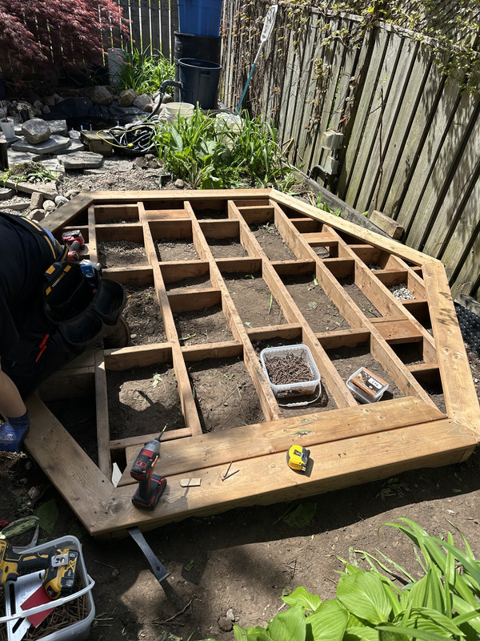
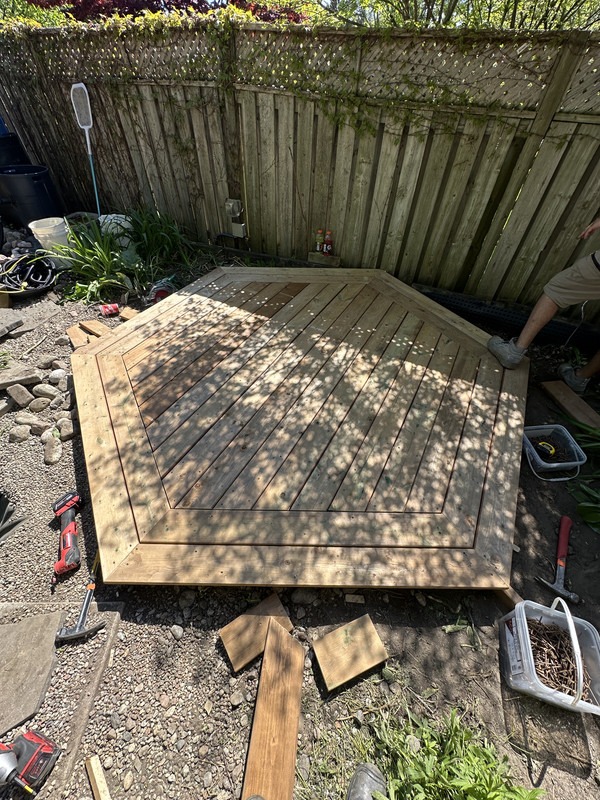
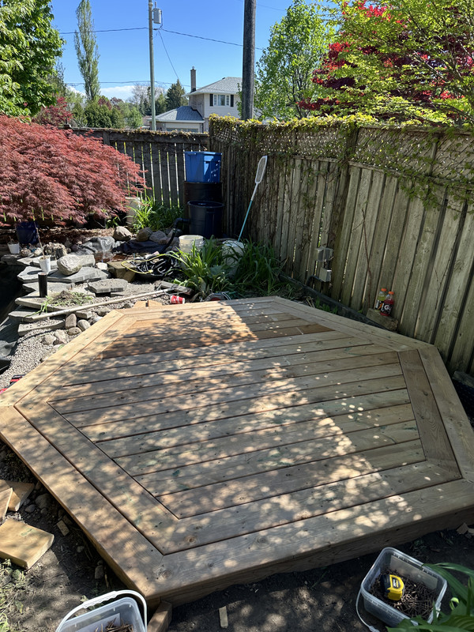
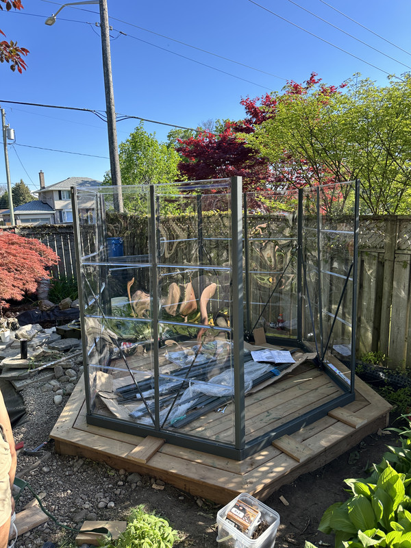
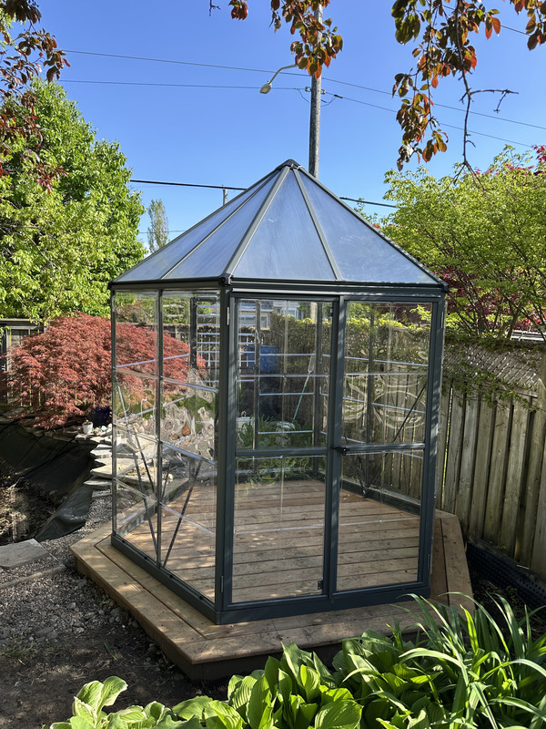
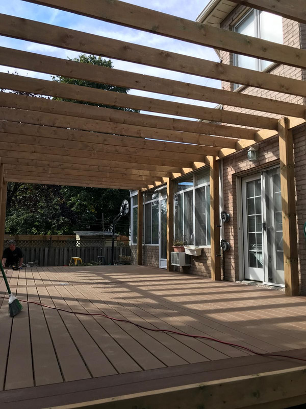
Ontario's harsh winters, spring rains, and summer heat cycles take a heavy toll on outdoor wood structures. Many homeowners in Mississauga, Oakville, and Burlington notice deck and fence deterioration after just a few seasons without maintenance. HandyMaster Pro addresses the most common outdoor repair needs.
We start with a thorough inspection to identify all damaged, rotted, or structurally weak components. Damaged boards are replaced with matching lumber, and loose connections are reinforced with proper hardware. For fence post repairs, we excavate around the base, set new posts in concrete where needed, and ensure proper alignment. Before any staining or sealing, we power wash the entire surface to remove dirt, mildew, and old finish. We then apply quality exterior stain or sealant designed to withstand Ontario weather. The result is a deck or fence that looks refreshed and is protected for years to come.
Outdoor repairs require materials and techniques suited to Ontario's climate. We use pressure-treated lumber and exterior-grade hardware that resist rot, insects, and moisture. With over 10 years of experience serving homeowners near Lake Ontario, across Oakville, Burlington, and Mississauga, we understand how local weather conditions affect outdoor structures. We are fully licensed and insured, offer transparent pricing with free estimates, and schedule work around your availability.
Minor repairs like replacing boards, fixing railings, or restaining do not require a permit. However, major structural changes, rebuilding, or expanding a deck may require municipal approval. HandyMaster Pro can help determine if your project needs a permit in Mississauga or surrounding areas.
Most wood decks in Ontario should be restained every 2-3 years depending on sun exposure, foot traffic, and the quality of the previous stain. We recommend annual inspections to catch wear early and extend the life of your deck.
In many cases, yes. If the fence panels are still in good condition, we can reset leaning posts by reinforcing the base with fresh concrete and proper bracing. This is significantly less expensive than a full fence replacement.
These guys fixed my gate perfectly. Professional and fast.